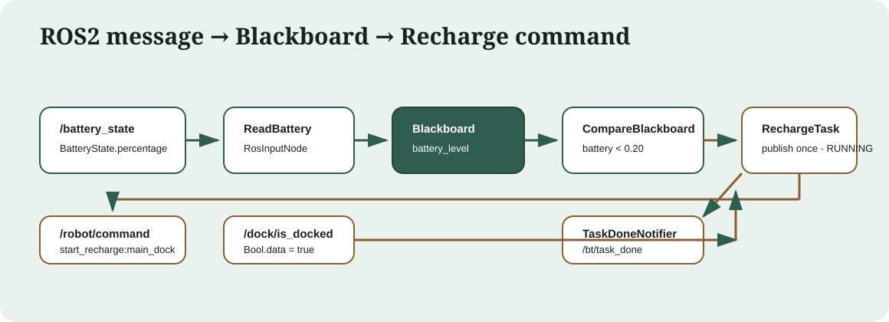

ROS2 回充教程¶
目标与结果¶
本教程演示一个可直接运行的完整功能：外部只发布一条电池消息，行为树判断低电量，
RechargeTask 只发布一条回充命令并跨 tick 等待对接；收到一条
/dock/is_docked=true 后，树发布一次完成通知并以 SUCCESS 结束。
{kind=link}

打包树固定为 8 个节点：1 个 Fallback、2 个 Sequence、1 个
ReadBattery、2 个 CompareBlackboard、1 个 RechargeTask 和 1 个
TaskDoneNotifier。执行器默认注册 40 种节点。
涉及文件¶
文件 |
作用 |
|---|---|
|
可复用的 ROS2 条件/输入订阅基类，统一数据时效与 QoS。 |
|
可复用的发布基类，支持等待订阅者匹配。 |
|
七端口回充 Action 的公开契约。 |
|
单次发布、等待、超时、终态锁存和 halt/retry 状态机。 |
|
通过单例 catalog、工厂和注册函数引用注册 40 种节点。 |
|
建树、周期 tick、根状态、幂等 start/stop service。 |
|
本教程使用的八节点行为树。 |
汇总非 ROS gate 与真实 DDS 验收边界。 |
消息如何进入黑板¶
ReadBattery 继承 RosInputNode<sensor_msgs::msg::BatteryState>。首次 tick
惰性创建订阅；收到新鲜消息后，onData 把 percentage 写入输出端口：
void onData(const sensor_msgs::msg::BatteryState& msg) override {
setOutput<double>("level", static_cast<double>(msg.percentage));
}
XML 用 {battery_level} 把输出重映射到共享黑板。sensor_data QoS 适合电池
传感器流；字面量参数仍只属于当前节点。
<ReadBattery topic="/battery_state"
timeout_ms="2000"
qos_profile="sensor_data"
level="{battery_level}"/>
八节点树¶
<?xml version="1.0"?>
<!--
ROS2 回充示例：外部 /battery_state 发布 sensor_msgs/BatteryState，
ReadBattery 把 percentage 写入黑板 battery_level，随后用 CompareBlackboard
判断是否低于阈值。低电量时发布回充命令，并等待 /dock/is_docked 为 true。
-->
<root main_tree_to_execute="RechargeTree">
<BehaviorTree ID="RechargeTree">
<Fallback name="battery_guard">
<Sequence name="battery_ok">
<ReadBattery name="read_battery"
topic="/battery_state"
timeout_ms="2000"
qos_profile="sensor_data"
level="{battery_level}"/>
<CompareBlackboard name="enough_power"
key="battery_level"
op=">="
value="0.20"/>
</Sequence>
<Sequence name="recharge_flow">
<CompareBlackboard name="needs_recharge"
key="battery_level"
op="<"
value="0.20"/>
<RechargeTask name="recharge"
command_topic="/robot/command"
dock_topic="/dock/is_docked"
target="main_dock"
timeout_ms="30000"
command_qos_depth="10"
dock_qos_depth="10"
dock_qos_profile="default"/>
<TaskDoneNotifier name="notify_recharge_done"
topic="/bt/task_done"
subscriber_wait_timeout_ms="3000"
task_name="recharge"/>
</Sequence>
</Fallback>
</BehaviorTree>
</root>
Fallback 的第一个分支在电量大于等于 0.20 时直接成功。低电量时第二个
Sequence 运行；两个控制节点都会保留正在运行的子节点游标，因此进入
RechargeTask 后不会每拍回到 ReadBattery，一条电池消息足以驱动本轮回充。
RechargeTask 状态机¶
端口 |
类型 |
默认值 |
契约 |
|---|---|---|---|
|
string |
|
回充命令 topic；空值是配置错误。 |
|
string |
|
对接状态 topic；空值是配置错误。 |
|
string |
|
发布 |
|
int |
|
等待对接超时； |
|
int |
|
命令发布队列深度，必须大于 0。 |
|
int |
|
对接订阅队列深度，必须大于 0。 |
|
string |
|
只接受 |
状态转换：
首拍创建或复用 publisher/subscription，清除旧 dock 状态，发布恰好一条命令，返回
RUNNING。后续 tick 不重发命令；先检查
dock=true，再检查超时，因此同时满足时成功优先。SUCCESS/FAILURE锁存到halt()；终态后的重复 tick 不产生副作用。halt()复位本次尝试但保留 ROS 端点。父级Retry再次尝试时恰好再发一条命令。
TaskDoneNotifier 使用 RosOutputNode 的公共
subscriber_wait_timeout_ms=3000。首次到达时若 DDS 观察者尚未匹配，它先返回
RUNNING；匹配后发布一次。3 秒内仍无观察者则照常发布并完成，监控端缺席不会
永久阻塞业务树。
默认注册与扩展¶
BtExecutorNode 调用：
bt_ros2::registerDefaultNodes(factory_);
NodeRegistrationCatalog::instance() 默认保存四个注册函数引用：
registerBtNodes：27registerRosTopicNodes：5registerRosDataNodes：4registerRechargeNodes：4
合计 40 个注册类型。 项目可在 executor 构造前追加一组专用注册函数：
bt_ros2::NodeRegistrationCatalog::instance().add(registerMyRobotNodes);
PublishRechargeCommand 和 IsDocked 仍注册用于兼容旧 XML，但新功能应使用完整
RechargeTask，避免 cooldown 编排造成重复命令和分散状态。
可复制的 Humble 演示¶
先构建并加载同一工作区：
source /opt/ros/humble/setup.bash
cd ~/bt_ws
colcon build --packages-select bt_ros2
source install/setup.bash
终端 1 启动安装后的树。手动 start 便于先接好所有观察者；终态自动停止 tick：
TREE_FILE="$(ros2 pkg prefix bt_ros2)/share/bt_ros2/trees/recharge.xml"
ros2 launch bt_ros2 bt_executor.launch.py \
tree_file:="$TREE_FILE" \
tick_rate_hz:=10.0 \
autostart:=false \
stop_on_terminal:=true
终端 2、3、4 分别先监听唯一命令、唯一通知和根状态：
source /opt/ros/humble/setup.bash
source ~/bt_ws/install/setup.bash
ros2 topic echo --once --field data /robot/command std_msgs/msg/String
source /opt/ros/humble/setup.bash
source ~/bt_ws/install/setup.bash
ros2 topic echo --once --field data --qos-reliability reliable \
/bt/task_done std_msgs/msg/String
source /opt/ros/humble/setup.bash
source ~/bt_ws/install/setup.bash
ros2 topic echo --field data /bt_executor/bt_status std_msgs/msg/String
终端 5 开始 tick，并只发布一条电池消息：
source /opt/ros/humble/setup.bash
source ~/bt_ws/install/setup.bash
ros2 service call /bt_executor/start std_srvs/srv/Trigger '{}'
ros2 topic pub --once --wait-matching-subscriptions 1 \
/battery_state sensor_msgs/msg/BatteryState '{percentage: 0.18}'
第一次 start 的精确字段是 success=True, message='started'，运行中再次 start 是
success=True, message='already running'。
终端 2 收到 start_recharge:main_dock 后，只发布一条 dock 消息：
source /opt/ros/humble/setup.bash
source ~/bt_ws/install/setup.bash
ros2 topic pub --once --wait-matching-subscriptions 1 \
/dock/is_docked std_msgs/msg/Bool '{data: true}'
随后终端 3 收到 task_done:recharge，根状态最终为 SUCCESS。运行中 stop 返回
stopped，已停止时返回 already stopped；stop 总会 halt 树，为下一轮 start 清理
锁存状态。stop_on_terminal=true 已自动停止计时器，此时可显式调用 stop 验证幂等
响应并完成复位：
source /opt/ros/humble/setup.bash
source ~/bt_ws/install/setup.bash
ros2 service call /bt_executor/stop std_srvs/srv/Trigger '{}'
预期字段是 success=True, message='already stopped'。
验证边界¶
默认 mock gate：
cmake --build build --target test_ros_bases --parallel
./build/bin/test_ros_bases
真实 ROS2 Humble 验收使用本页“启动执行器与观察者”和“只发布一次事件”的可复制命令。
验收范围是 40 个注册、8 节点安装树、幂等 start/stop、各一条
battery/command/dock/notifier 和最终 SUCCESS。需要隔离并行 ROS 图时，在各终端设置
同一个未占用的 ROS_DOMAIN_ID。
Jazzy 环境状态：unverified: ROS 2 Jazzy is not installed on this machine.
只读 Web 监视器¶
BtExecutorNode 每次 tick 发布完整 JSON 节点快照，并把 start/stop
service 的 started/completed 生命周期发布到 transient-local topic。网页适配器只
订阅观察数据，不提供控制机器人或调用 service 的 HTTP 接口。
先在一个终端启动执行器（两个进程必须使用相同的 XML）：
source /opt/ros/humble/setup.bash
source ~/bt_ws/install/setup.bash
TREE_FILE="$(ros2 pkg prefix bt_ros2)/share/bt_ros2/trees/recharge.xml"
ros2 launch bt_ros2 bt_executor.launch.py \
tree_file:="$TREE_FILE" autostart:=false stop_on_terminal:=true
再在第二个终端启动网页：
source /opt/ros/humble/setup.bash
source ~/bt_ws/install/setup.bash
ros2 launch bt_ros2 bt_web.launch.py \
tree_file:="$TREE_FILE" http_port:=8088
浏览器访问 http://127.0.0.1:8088/。页面展示树结构、每拍节点状态、最近 48 拍的
Success/Failure 节点数柱状图、根状态和 /bt_executor/start、/bt_executor/stop
的服务时间线。树面板支持节点级 +/-
折叠以及“折叠全部/展开全部”；折叠只改变显示，不改变 XML 或 tick。页面还可导出当前
JSON 快照，或打开快照进入离线复盘模式；离线模式会以单拍显示柱状图。
柱状图以整棵树节点总数作为固定纵轴，保留最近 48 拍，并在实时刷新时自动跟随最新 Tick。
网页观察接口¶
HTTP 接口 |
作用 |
|---|---|
|
HTTP 适配器健康检查。 |
|
XML 展开后的稳定 DFS 结构和 |
|
最新完整节点快照。 |
|
最近快照历史。 |
|
service 生命周期事件历史。 |
默认 ROS topic 是 /bt_executor/tree_snapshot 和 /bt_executor/service_event。
两个 launch 文件提供同名参数用于同时改名；HTTP 路由全部只读，POST 请求返回 405。
隔离 Debug 模式¶
Debug 模式使用独立执行器和 Web 控制面。launch 默认设置 ROS_DOMAIN_ID=77，不会连接
普通 /bt_executor 所在的 ROS graph：
source /opt/ros/humble/setup.bash
source ~/bt_ws/install/setup.bash
TREE_FILE="$(ros2 pkg prefix bt_ros2)/share/bt_ros2/trees/recharge.xml"
ros2 launch bt_ros2 bt_debug.launch.py \
tree_file:="$TREE_FILE" http_port:=8089 monitor_http_port:=8090 ros_domain_id:=77
浏览器访问 http://127.0.0.1:8089/ 进入 Debug 控制页。调试执行器初始暂停；页面可暂停、继续、单步、
重载，也可把每个 Condition 设置为 Auto、成功 或 失败。覆盖在条件自身
tick() 前生效，不执行被覆盖条件的 ROS 订阅或判断逻辑。Action、Control 和 Decorator
不能覆盖。
Debug HTTP 接口¶
HTTP 接口 |
作用 |
|---|---|
|
当前运行模式、session、Condition key 和活动覆盖。 |
|
请求体为 |
|
原子替换 Condition 覆盖，例如 |
Debug 运行树使用独立端口 http://127.0.0.1:8090/，只读显示隔离执行器的完整树、最近
48 拍 Success/Failure 节点数柱状图和 service 事件。对应的 Trigger service 是
/bt_debug_executor/pause、resume、step 和
reload。普通 bt_web.launch.py 仍是严格只读入口，不注册这些 POST 路由。
Debug 模式仍会执行 Action。包含物理控制 Action 的自定义树必须继续使用隔离 domain，或 把 Action 替换为测试实现；Condition 覆盖不是生产安全机制。